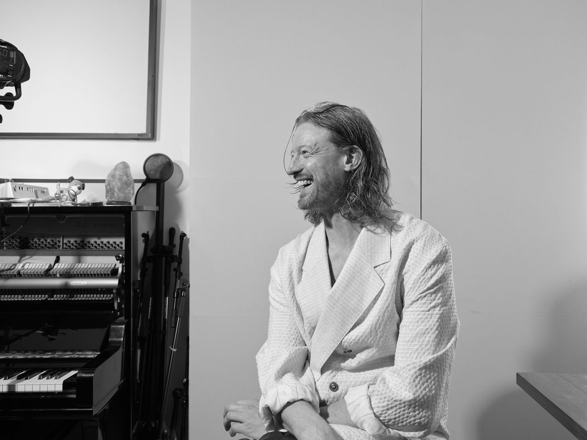

Parallel lines maintain the same distance from one another at every point and therefore never intersect. Our lives, too, are made up of parallels: there is the one line shaped by the things we do, alongside countless others formed by the things we do not do. What we leave undone also influences our lives; it remains present as memory, longing or imagination, continuing to shape our life story. This idea forms the basis of Parallels, Andert Tysma’s third album, following Children of Trinoom (2022) and Hana (2024), released on Apollo / R&S Records.
Tysma’s own life is also made up of parallels. After studying at the conservatory, he chose to pursue medicine. Although music never disappeared from his life, for a long time he felt that the two paths were difficult to reconcile. Gradually, however, they began to inform one another: both disciplines require attentive listening and observation, and a curiosity about what lies beneath the surface. Tysma has now worked for many years as both a doctor and a composer.
On Parallels, Tysma works with modular and other synthesizers alongside acoustic elements. The music moves between different moods and extremes, between darkness and light, tension and openness. Repetition never means returning to exactly the same place: what seems familiar can suddenly feel different through the smallest shift.
The album took shape over several years in Amsterdam and Berlin, carrying traces of the different places, relationships and experiences that shaped Tysma’s life. Just as memories change with the passing of time, the meaning of the compositions also evolved throughout the making of the album — a process that does not end now that the album is complete.
With Parallels, Tysma lets go of the pursuit of a definitive version or a perfect album. It is a snapshot: a collection of pieces that captures where he finds himself at this particular moment in his life, a point shaped by everything that came before.